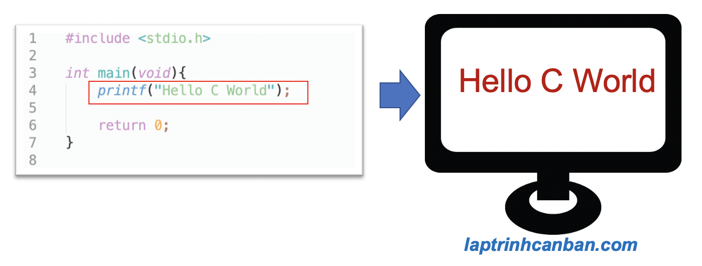

Phần đầu tiên trong chuyên đề nhập xuất trong C, chúng ta sẽ cùng tìm hiểu về hàm printf() và cách xuất dữ liệu và xuất kết quả ra màn hình trong C. Bạn sẽ học được khái niệm cũng như các cách xử lý căn bản và nâng cao của hàm printf() trong C sau bài học này.
printf trong c là gì
printf() trong C là một hàm cài sẵn trong tệp tiêu đề Standard Input / Output, có chức năng hiển thị (xuất) dữ liệu ra màn hình khi chạy chương trình C.

Chúng ta sử dụng hàm printf() trong C với cú pháp sau đây.
printf (*format, object1, object2, … )
Trong đó:
object: đối tượng (dữ liệu) cần xuất ra màn hình. Chúng ta có thể chỉ định một hoặc là nhiều đối tượng khác nhau và xuất chúng cùng lúc ra màn hình, và trong trường hợp có nhiều đối tượng thì cần phải đặt chúng cách nhau bởi dấu phẩy.*format: tập hợp chuỗi định dạng nhập xuất của các đối tượng cần xuất ra màn hình. Định dạng nhập xuất giúp chỉ định kiểu dữ liệu của đối tượng cần nhập vào, và dấu*có ý nghĩa là số nhiều và có bao nhiêu đối tượng được chỉ định thì cũng sẽ có bấy nhiêu định dạng tương ứng được chỉ định. Xem thêm: Định dạng nhập xuất trong C.
Hàm printf() sẽ xuất ra màn hình các đối tượng cần xuất theo đúng như định dạng format đã được chỉ định. Lưu ý là chúng ta cần chỉ định chính xác format của đối tượng cần xuất, nếu không thì sẽ không thể xuất ra đúng kết quả mong muốn, hoặc là sẽ xảy ra lỗi trong quá trình compile chương trình C. Ví dụ như nếu xuất ra kiểu số nguyên dạng thập phân thì phải chỉ định format là %d, hoặc kiểu chuỗi thì phải là %s chẳng hạn.
Cách sử dụng căn bản của printf trong C
Lược bỏ chuỗi định dạng format khi dùng hàm printf trong C
Chúng ta có thể lược bỏ chuỗi định dạng format và sử dụng hàm printf để xuất một ký tự hoặc một chuỗi ký tự bất kỳ, như ví dụ sau đây:
|
Lưu ý là chúng ta cần phải đặt ký tự hoặc chuỗi ký tự cần xuất vào giữa cặp dấu nháy kép "", nếu không thì lỗi sẽ xảy ra như các cách viết sau đây:
printf('a'); |
xuất không xuống dòng trong C
Về mặc định sau khi kết thúc một câu lệnh sử dụng hàm printf cơ bản, thì kết quả hiển thị ra màn hình sẽ không tự động xuất xuống dòng mà sẽ tiếp tục xuất ra kết quả của lệnh printf tiếp theo.
Hãy cùng xem ví dụ cụ thể sau đây:
printf("Hello"); |
- Xem thêm: Ký tự đặc biệt trong C (escape sequence)
xuất xuống dòng trong C
Nếu sử dụng hàm printf trong C theo cách mặc định thì kết quả sẽ không tự động xuất xuống dòng, do đó chúng ta cần phải sử dụng một ký tự đặc biết có tác dụng xuất xuống dòng, đó là ký tự xuống dòng \n trong C.
Ví dụ:
printf("Hello\n"); |
Sử dụng chuỗi định dạng format khi dùng hàm printf trong C
Trong các trường hợp cần phải xuất dữ liệu ra màn hình với các yêu cầu nâng cao, thì chúng ta sẽ chỉ định thêm chuỗi định dạng format khi sử dụng hàm printf.
Chuỗi định dạng format sẽ được chỉ định theo cú pháp sau đây. Lưu ý là các đối số viết trong cặp dấu [] thì có thể được lược bỏ.
%[flags][width][.precision][length]specifier
flagschứa các chỉ định có tác dụng căn chỉnh, thêm dấu , đệm số 0 v.v..width: độ dài tối thiểu của kết quả xuất.precision: độ chính xác khi xuất số thực (số chữ số đằng sau dấu phẩy số thực sau khi làm tròn)length: chỉ định bởi một trong các ký tựh,lhoặcLnhằm xác định số thuộc dạng short, long hay long doublespecifierlà định dạng của chuỗi kết quả.
Mặc dù có rất nhiều đối số trong cú pháp tổng quát khi chỉ định format, tuy nhiên trong thực tế chúng ta thường rút gọn hầu hết và chỉ sử dụng tới đối số specifier với cú pháp đơn giản nhất sau đây:
%specifier
Ví dụ cụ thể, chúng ta sử dụng hàm printf() với chuỗi định dạng format như sau:
|
Với ví dụ này, chúng ta có 2 đối tượng cần xuất ra màn hình là số 7 và chuỗi ký tự "chú lùn". Tương ứng với 2 đối tượng này là các specifier (chuỗi định dạng) gồm %d (kiểu số) và %s (kiểu chuỗi ký tự). Và 2 định dạng này được viết trong tập hợp format là "%d%s" như trên.
Chúng ta cũng có thể sử dụng biến để gán các giá trị, và sau đó sử dụng chuỗi định dạng phù hợp với kiểu của biến đó để xuất kết quả ra màn hình như sau:
|
Danh sách các chuỗi định dạng sử dụng trong C sẽ được Kiyoshi trình bày ở bảng dưới đây.
Bảng chuỗi định dạng nhập xuất trong C
Dưới đây là bảng chuỗi định dạng nhập xuất thông dụng trong C hay được sử dụng nhất.
| Chuỗi định dạng | Đại diện cho kiểu ký tự | Ý nghĩa |
|---|---|---|
%c | char | Xuất ra một ký tự |
%s | char * | Xuất ra một chuỗi ký tự |
%d | int, short | Xuất ra một số nguyên dưới dạng thập phân |
%u | unsigned int, unsigned short | Xuất ra một số nguyên dưới dạng thập phân không dấu |
%x | int, short, unsigned int, unsigned short | Xuất ra một số nguyên dưới dạng thập lục phân |
%o | int, short,unsigned int, unsigned short | Xuất ra một số nguyên dưới dạng bát phân |
%f | float | Xuất ra một số thực |
%e | float | Xuất ra một số thực dưới dạng số mũ |
%g | float | Xuất ra một số thực dưới dạng phù hợp nhất |
%ld | long | Xuất ra số nguyên chính xác kép ở dạng thập phân |
%lu | unsigned long | Xuất ra số nguyên chính xác kép ở dạng thập phân không dấu |
%lo | long, unsigned long | Xuất ra số nguyên chính xác kép trong hệ bát phân |
%lx | long, unsigned long | Xuất ra số nguyên chính xác kép ở hệ thập lục phân |
%lf | double, unsigned long | Xuất ra số thực chính xác gấp đôi |
%a | double | Xuất ra một số thực chính xác kép thập lục phân |
- Xem thêm: Định dạng nhập xuất trong C
Ngoài ra, chúng ta có thể kết hợp các chuỗi định dạng ở trên với các ký tự đặc biệt như ký tự xuống dòng \nchẳng hạn để tinh chỉnh các kết quả khi xuất ra màn hình. Có ba ký tự hay được sử dụng nhất là:
| Ký tự đặc biệt | Ý nghĩa |
|---|---|
\n | Xuống dòng |
\t | Dấu tab |
\0 | Kết thúc chuỗi |
- Xem thêm: Ký tự đặc biệt trong C (escape sequence)
Sử dụng chuỗi định dạng trong hàm printf để xuất dữ liệu trong C
Ứng dụng các kiến thức ở trên, chúng ta có thể chỉ định và xuất dữ liệu ra màn hình với các kiểu dữ liệu phổ biến nhất trong C như dưới đây:
Xuất ký tự trong C | printf char trong C bằng %c|
Chúng ta sử dụng chuỗi định dạng %c để xuất ký tự trong C ra màn hình các ví dụ sau:
printf("%c\n", 'a'); //a |
Xuất chuỗi ký tự trong C| printf string trong C bằng %s
Chúng ta sử dụng chuỗi định dạng %s để xuất chuỗi ký tự trong C ra màn hình các ví dụ sau:
printf("%s\n", "abc");//abc |
printf int trong C bằng %d,%x,%o
Chúng ta sử dụng một trong các chuỗi định dạng phổ biến như %d,%x,%o để printf số nguyên trong C ra màn hình các ví dụ sau:
printf("Dạng thập phân:%d\n", 88);//Dạng thập phân:88 |
printf float trong c bằng %f,%e
Chúng ta sử dụng chuỗi định dạng phổ biến như %f,%e để printf float trong C ra màn hình các ví dụ sau:
printf("%f\n", 12.34);//12.340000 |
Lưu ý là ở đây chúng ta sử dụng định dạng %f và không thêm các định dạng nhằm làm tròn số, nên kết quả sẽ có nhiều số 0 đằng sau dấu phẩy như ở trên. Để có thể làm tròn và quyết định số chữ số trong kết quả, chúng ta cần sử dụng thêm 2 đối số trong hàm printf là [width][.precision] như dưới đây:
printf("%2.2f\n", 12.34);//4.4 |
Chúng ta sẽ làm rõ về 2 đối số này ở phần dưới bài nhé.
printf double trong c bằng %lf,%a
Ngoài các định dạng sử dụng với float đều có thể sử dụng với khi printf double trong C thì chúng ta cũng sử dụng một trong các chuỗi định dạng phổ biến như %lf,%a để printf double trong C ra màn hình các ví dụ sau:
printf("%lf\n", 12.34);//12.340000 |
Tương tự như trên thì ở đây chúng ta sử dụng định dạng %f và không thêm các định dạng nhằm làm tròn số, nên kết quả sẽ có nhiều số 0 đằng sau dấu phẩy như ở trên.
xuất ra ký tự phần trăm % trong C
Để xuất ra ký tự phần trăm % trong C, chúng ta sẽ sử dụng tới định dạng %% như các ví dụ sau:
printf("Tỉ lệ nước trong người là %d%%", 70); |
Cách sử dụng nâng cao của printf trong C
Bằng cách chỉ định các đối số như flags,width,.precision và length, chúng ta có thể định thêm các định dạng đầu ra nâng cao như căn trái, thêm dấu, đệm số 0 v.v.. khi xuất dữ liệu trong C bằng cách sử dụng cú pháp đầy đủ của printf trong C như Kiyoshi đã trình bày ở phần trên.
%[flags][width][.precision][length]specifier
flagschứa các chỉ định có tác dụng căn chỉnh, thêm dấu , đệm số 0 v.v..width: độ dài tối thiểu của kết quả xuất.precision: độ chính xác khi xuất số thực (số chữ số đằng sau dấu phẩy số thực sau khi làm tròn)length: chỉ định bởi một trong các ký tựh,lhoặcLnhằm xác định số thuộc dạng short, long hay long doublespecifierlà định dạng của chuỗi kết quả
Trước hết, hãy tìm hiểu về flags. Bảng các flags có thể sử dụng trong hàm printf như sau:
| flag | Ý nghĩa |
|---|---|
| - | Căn trái |
| + | Thêm dấu cho số |
| 0 | Đệm số 0 cho đủ độ dài kết quả xuất |
| space | Đệm dấu cách cho đủ độ dài kết quả xuất |
| # | Chỉ định các xuất dữ liệu khác |
Tiếp theo là về width. Đây là đối số chỉ định độ dài tối thiểu của chuỗi kết quả xuất ra màn hình. Nếu như độ dài thực của chuỗi kết quả nhỏ hơn giá trị của width thì các giá trị chỉ định trong flags như số 0 hay dấu cách sẽ được sử dụng để đệm cho đủ độ dài width.
.precision là độ chính xác khi xuất ra màn hình các số thực dấu phẩy động như float hay double. Độ chính xác này nói cách khác chính là số chữ số ở phần thập phân của số thực khi xuất. Ví dụ nếu .precision bằng 2 thì số thực 1.236 sẽ được chuyển thành 1.24 chẳng hạn.
Tiếp theo là length, đối số được chỉ định bởi một trong các ký tự h,l hoặc L nhằm xác định số thuộc dạng short, long hay long double.
Cuối cùng là specifier là định dạng của chuỗi kết quả như Kiyoshi đã trình bày ở các phần trên.
Ứng dụng các kiến thức trên, chúng ta có thể định dạng nâng cao đầu ra của hàm printf trong C với các phương pháp như sau:
Chỉ định độ chính xác
Bằng cách sử dụng .precision, chúng ta có thể chỉ định độ chính xác (số chữ số đằng sau dấu phẩy) khi xuất dữ liệu trong C như sau:
|
Đệm dấu cách cho đủ độ dài chuỗi kết quả
Để Đệm số 0 hoặc dấu cách vào bên trái hoặc bên phải chuỗi kết quả, chúng ta cần sử dụng tới đối số width và flags căn trái - như sau:
|
Đệm số 0 cho đủ độ dài chuỗi kết quả
Một cách tương tự thì chúng ta cũng có thể sử dụng tới width và flags để đệm số 0 cho đủ độ dài chuỗi kết quả khi xuất ra màn hình. Và flags chúng ta sử dụng lúc này là 0 như sau:
|
Chỉ định dấu trong số khi in
Chúng ta có thể chỉ định dấu trong số khi in kết quả trong C bằng cách sử dụng tới đối số flags + như dưới đây.
|
Tổng kết
Trên đây Kiyoshi đã hướng dẫn bạn về hàm printf() và cách xuất dữ liệu và xuất kết quả ra màn hình trong C rồi. Để nắm rõ nội dung bài học hơn, bạn hãy thực hành viết lại các ví dụ của ngày hôm nay nhé.
Và hãy cùng tìm hiểu những kiến thức sâu hơn về C trong các bài học tiếp theo.
URL Link
HOME › lập trình c cơ bản dành cho người mới học lập trình>>06. nhập xuất trong c